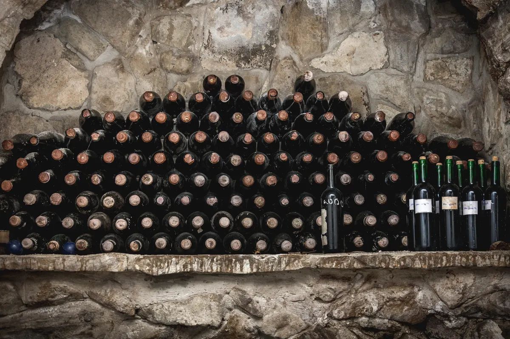
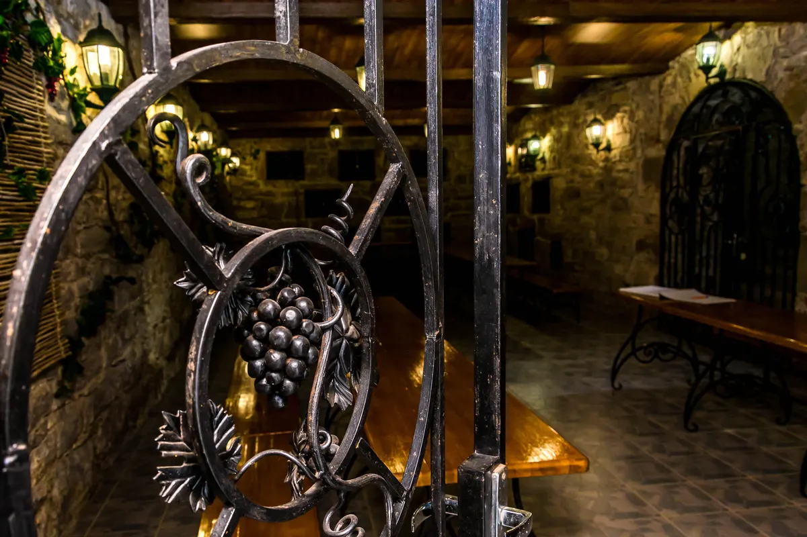

Голицынские подвалы Архадерессе · с 1888 года
Спуститесьсами
Длинные галереи дубовых бутов и бочек, где выдерживаются марочные вина дома.
Раздел I · Подвал
Подвалу 138 лет.Он до сих пор работает.
Голицын не рыл штолен: выбирались глубокие овраги, расчищалось дно, достраивались верхние этажи. Отсюда и название — «старинные подвалы в оврагах».
- 1888
- Подвал №1Л. С. Голицын строит винодельню и первый подвал в имении князя Горчакова «Архадерессе».
- 4
- Подвала Голицына№1 — 1888, №2 — 1895, №3 — 1898, №4 — 1899. Действуют по сей день.
- +14°C
- Круглый годТемпература воздуха в подвалах. Летом перепад с улицей чувствуется — берите тёплые вещи.
- 200 000
- ДекалитровЁмкость выдержки после постройки четырёх подвалов, конец XIX века.

Ворота
Семь способов спуститься: три подвала в самой простой программе, четыре — в закрытой.
Раздел II · Программы
Лестница дегустаций
Программы экскурсий и дегустаций, действующие с 15 марта 2025 года. От часа двадцати в трёх подвалах — до закрытой дегустации у коллекции и сыров в каминном зале.
- 01 Экскурсия по голицынским подвалам и дегустация 10 марок вин 3 голицынских подвала · 10 марок вин · обучение навыкам дегустации Фотографии в исторических местах, связанных с именами Голицына и Горчакова. 1 ч 20 мин от1 450 ₽за гостя
- 02 Авторская экскурсия, 9 марок вина и игристое в подвале 9 марок вина · дегустация игристого в подвале · группа от 15 гостей до 2 часов от1 900 ₽за гостя
- 03 Индивидуальная экскурсия с дегустацией 10 марок вин не в группе · 10 марок вин до 2 часов от2 750 ₽за гостя
- 04 Ретро-дегустация при свечах в старинном голицынском подвале старинный подвал · при свечах · по предварительной заявке до 2 часов от2 750 ₽за гостя
- 05 Вечерняя дегустация с посещением старинных голицынских подвалов голицынские подвалы · вечер · по предварительной заявке до 2 часов от2 750 ₽за гостя
- 06 VIP-дегустация и экскурсия 4 голицынских подвала · 2 премиальные марки у коллекции · 10 марок и 6 авторских сыров в каминном зале Экскурсия по четырём подвалам с дегустацией двух марок премиальных вин прямо в подвале с коллекцией; дальше — гастросопровождение в каминном зале Дегустационного комплекса. 2 часа от27 500 ₽за пять гостей
Цены и длительности — с действующего прайса «с 15.03.25». У пяти программ из семи на сегодняшнем сайте нет ни строчки описания: только длительность и цена — здесь показано ровно то, что есть в источнике. Форматы цен на сайте разнородны («От 1450 рублей», «от 2 750 рублей», «400 р. 1 штука») — приведены к одному виду. Администрация оставляет за собой право изменять время, маршруты и место проведения дегустаций.
Раздел III · Дорога
Дегустационный зал «Архадерессе»
Старинное помещение: в прошлом барская усадьба, впоследствии — дом виноделов. Отсюда начинается спуск в подвалы.
- Адрес
- Республика Крым, г. Судак, с. Миндальное, ул. Миндальная, 8А
- Координаты
- 44.858945, 35.04787 · 44°51′32.2″N, 35°2′52.33″E
- Начало дегустаций
- 10:00 · 11:00 · 13:00 · 14:00 · 15:00 · 16:00 — ежедневно
- Вечерняя
- 20:00 — дегустация при свечах, по предварительной заявке
- Телефон
- +7 (978) 956-33-22 · с 10:00 до 17:00 без выходных
- При комплексе
- фирменный магазин и винный бар · с 10:00 до 20:00

- Тёплые вещи. В подвалах около 14–16 °C — на фоне летней жары это особенно чувствительно.
- Удобная обувь. В подвалы спускаются пешком, экскурсия идёт на ногах.
- Возраст. Дегустация — только с 18 лет; дети до 12 лет — в сопровождении взрослого.
Раздел IV · Бронь
В подвале всегда +14 °C.Даже в феврале.
Экскурсия по трём голицынским подвалам и дегустация 10 марок вин — 1 час 20 минут, от 1 450 ₽ за гостя. Программы при свечах и вечерние — по предварительной заявке.
с 10:00 до 17:00 без выходных · с. Миндальное, ул. Миндальная, 8А — дегустационный зал «Архадерессе»